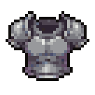

5 · The Network tab
On the Expeditions screen, beside Places, Out now and Jobs. Read in five seconds: what to do next (one line, one button), how goods flow (a picture, left to right), then each piece as a card with its stock or progress, time left and warnings. All mockups
Empty
Just unlocked, hall placed, nothing built. The next step is the whole screen; the flow shows the shape of what's coming, greyed.
Build on a site, then the cart carries what it makes to places that pay for it.
2Normal
Two buildings, two places served, the cart on its loop. The flow carries icons and counts, so a good can be followed by its icon alone.
25 min

Full, with trouble
Anything in its last day sorts the cards "Leaving soonest" first, with the hourglass and the word as well as the colour. A raid is the next step.
waiting
LAST DAY
LAST DAY
What it must answer at a glance
- 1What should I do next? One line, one ember button, always first. Its order: answer a raid · place the hall · discover a site · build · discover a place that wants your goods · set a route · crew the cart · post a hero · claim a reward.
- 2What is this tab for? In the empty state, the greyed flow shows building → cart → place in one sentence.
- 3Is something in danger? A raid takes the next-step line, and the tab gets a "!" badge.
- 4How do goods move? The flow: stock by icon on the left, the cart's load and destination in the middle, each place's progress on the right.
- 5What's about to go? "Leaving soonest" sorts to the top when anything is in its last day; each line has ⏳, the time and "LAST DAY".
Decisions to confirm
- Tapping a card opens its sheet over the tab (building, order, cart), same sheets as from the map; "Show on the map" jumps to the map centred on it.
- The flow picture lists at most 3 per column; more collapse into "+2".
- A place's card shows its headline tile, so two taverns with different prizes can be compared from here.
- The trial's line-of-numbers camp cards and the raid log go; the raid log moves into the cart/building sheets as plain sentences.
- The first chain checklist (step 8) will sit where the next-step card is, until it's done.